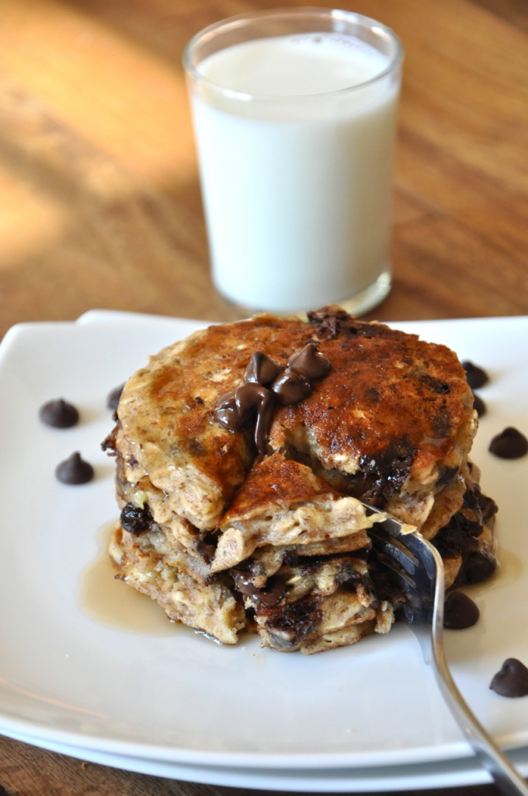
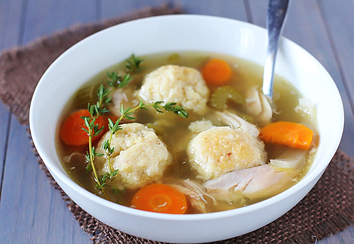

Desayuno

Panqueques Con Chispas De Chocolate
Los panqueques están hechos con harina, leche, huevos, mantequilla, sal, y chispas de chocolate.
Los panqueques se sirven con leche cremosa.
Almuerzo

Quesadillas Con Salsa y Guacamole
Los quesadillas están hechos con un tortilla y queso. La salsa está hecha con tomates, cebollas, coriander, jalapeños, y sal. El guacamole se hace con avacados, tomates, y cebollas.
Los panqueques se sirven con limonada fría.
Cena
El aperitivo

Sopa de Pollo Con Bolas de Matzo
Los Bolas de Matzo estan hecha con matzo meal, huevos, y sal. La sopa esta hecho con agua, pollo, zanahorias, apio y sal.